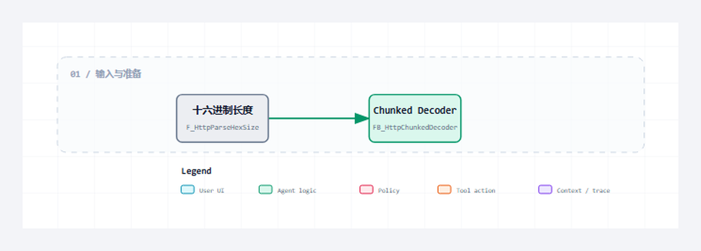

这一组代码覆盖 chunk-size、分号扩展、CRLF、0 终止块、trailer 边界和 Body 容量检查。
适合谁收藏
- 准备复用本组源码并审查对象边界的工程师。
- 需要把公开代码装配进目标 CodeSys 工程的人。
- 准备重新完成编译、离线测试和真机验证的读者。
本篇完整公开 2 个 ST 文件。代码直接读取已验证工程，保留声明、实现、注释和缩进；没有伪代码，没有跨文件拼接，也没有省略号。
先给结论
这一组代码覆盖 chunk-size、分号扩展、CRLF、0 终止块、trailer 边界和 Body 容量检查。 本篇的通过标准不是“代码已经贴出”，而是每个文件的职责、调用位置、状态边界和验证入口都能对应起来，并且完整代码可逐字回查源文件。

读图重点
先找到 FB_HttpChunkedDecoder 在本组中的位置，再沿图确认其余对象分别承担数据、状态、执行或诊断职责。图只给阅读顺序，最终判断必须回到下面的完整 ST 代码。
先看文件职责
| 序号 | 文件 | 职责 | 行数 |
|---|---|---|---|
| 1 | FB_HttpChunkedDecoder.st | chunked Body 解码器 | 194 |
| 2 | F_HttpParseHexSize.st | chunk-size 十六进制解析 | 62 |
阅读顺序不是按文件名机械展开。先看数据和状态，再看公开方法，最后顺着错误出口和调用对象检查边界。源码篇的目标是让读者能对照工程复现，不是用大段代码制造篇幅。
从协议约束到代码职责
协议约束
这一组代码覆盖 chunk-size、分号扩展、CRLF、0 终止块、trailer 边界和 Body 容量检查。 协议层只定义消息与状态成立的条件，工程层还必须把条件分配给确定对象，避免 Parser、Builder、Server、Client 和测试入口互相越权。
对象分工
- 第 1 个对象
FB_HttpChunkedDecoder.st：承担“chunked Body 解码器”。阅读时先确认输入与公开输出，再追状态、长度和错误出口，最后核对它被谁周期调用或被哪个对象消费。 - 第 2 个对象
F_HttpParseHexSize.st：承担“chunk-size 十六进制解析”。阅读时先确认输入与公开输出，再追状态、长度和错误出口，最后核对它被谁周期调用或被哪个对象消费。
装配与验证
这组文件必须作为一个职责单元阅读和编译。先用确定输入验证“先验证再复制”，再制造非法或容量边界验证“十六进制长度必须防溢出”，最后在真实通信或上层调用中确认“首版忽略 trailer 语义但验证其结束边界”。如果单文件测试通过但装配后失败，应优先检查结构体、常量、状态枚举和周期调用关系，而不是立即重写核心算法。源码完整公开只证明读者拿到了同一事实源，目标运行时是否通过仍需重新编译和真机取证。
本篇从 FB_HttpChunkedDecoder.st 开始审查：先确认“先验证再复制”对应的类型、常量或公开输入，再沿 CASE 或方法调用追踪成功路径，随后逐个检查容量、超时和协议错误出口，最后在 F_HttpParseHexSize.st 对应的结果或装配位置确认错误能被观测、清理并再次执行。这个顺序专门用来区分“算法正确但没有周期调用”“状态能完成但错误被覆盖”和“首版忽略 trailer 语义但验证其结束边界尚未形成验证证据”三类问题。只有本篇源码、装配和验证使用同一组对象与同一组边界，完整开源才具有可复现意义。
本篇完整开源代码
下面按职责顺序给出本篇全部 ST 文件。每个代码块保留完整声明与实现；阅读时把状态、长度、错误出口和调用对象与上面的职责表逐项对照。
完整源码 1：FB_HttpChunkedDecoder.st
职责：chunked Body 解码器
/// 功能 : HTTP chunked transfer coding 解码器。
/// 库依赖 : 暂无
{attribute 'hide_all_locals'}
FUNCTION_BLOCK FB_HttpChunkedDecoder
VAR_OUTPUT
bDone : BOOL; // 解码完成标志。
bError : BOOL; // 错误锁存标志。
diErrorID : DINT; // 诊断错误码，0表示无错误。
eError : E_HttpError; // 最近一次解码错误码。
sDiagMsg : STRING(255); // 最近一次解码诊断文本。
udiDecodedLength : UDINT; // 已解码 body 字节数。
END_VAR
// === IMPLEMENTATION ===
/// =======================================================================
/// 名称 : FB_HttpChunkedDecoder
/// 功能 : 将完整 HTTP chunked body 解码为普通 body 文本。
/// 库依赖 : 暂无
/// =======================================================================
/// 使用说明 : 1. 本 FB 只处理已经收到完整 TCP 报文后的协议层解码。
/// : 2. 首版支持 chunk-size 与分号扩展，trailer 字段仅验证结束空行并忽略字段语义。
/// =======================================================================
// === METHOD M_Decode ===
/// =======================================================================
/// 名称 : M_Decode
/// 功能 : 解码 chunked body，输出拼接后的普通 body。
/// 说明 : 该实现严格检查 CRLF 和 body 上限，防止 PLC 字符串越界。
/// =======================================================================
{attribute 'hide_all_locals'}
METHOD PUBLIC M_Decode : BOOL
VAR_INPUT
sChunked : STRING(GVL_Http.cnMaxMessageSize) := ''; // 诊断或协议文本字段。
END_VAR
VAR_OUTPUT
sBody : STRING(GVL_Http.cnMaxBodySize); // 诊断或协议文本字段。
END_VAR
VAR
uiInputLen : UINT; // 计数、长度或状态数值。
uiIndex : UINT; // 计数、长度或状态数值。
uiScan : UINT; // 计数、长度或状态数值。
uiLineLen : UINT; // 计数、长度或状态数值。
uiLineIndex : UINT; // 计数、长度或状态数值。
uiCopyIndex : UINT; // 计数、长度或状态数值。
uiChunkSize : UINT; // 计数、长度或状态数值。
udiChunkSize : UDINT; // 计数、长度或状态数值。
sLine : STRING(GVL_Http.cnMaxChunkLineLen); // 诊断或协议文本字段。
pInput : POINTER TO BYTE; // 当前扫描周期使用的字节指针。
pLine : POINTER TO BYTE; // 当前扫描周期使用的字节指针。
pWrite : POINTER TO BYTE; // 当前扫描周期使用的字节指针。
END_VAR
// === IMPLEMENTATION ===
// 解码器每次调用都从干净状态开始，避免上一次半包或错误状态污染本轮解析。
// 约束：chunk-size 行允许扩展参数，但扩展内容不参与长度计算，避免 PLC 侧额外分配解析状态。
// 风险：非法十六进制长度必须立即失败，否则后续 body 边界会被错读并污染真实 HTTP 响应。
// 诊断：失败路径保留 eError 和 sDiagMsg，真机矩阵可直接判断坏 chunk 是否被协议层拒绝。
bDone := FALSE;
bError := FALSE;
eError := E_HttpError.iNoError;
sDiagMsg := '';
udiDecodedLength := 0;
sBody := '';
M_Decode := FALSE;
uiInputLen := TO_UINT(LEN(sChunked));
IF uiInputLen = 0 THEN
bError := TRUE;
eError := E_HttpError.iNeedMoreData;
sDiagMsg := 'chunked body is empty';
RETURN;
END_IF
pInput := ADR(sChunked);
pWrite := ADR(sBody);
uiIndex := 0;
WHILE uiIndex < uiInputLen DO
uiScan := uiIndex;
WHILE ((uiScan + 1) < uiInputLen)
AND NOT ((pInput[uiScan] = 16#0D) AND (pInput[uiScan + 1] = 16#0A)) DO
uiScan := uiScan + 1;
END_WHILE
IF (uiScan + 1) >= uiInputLen THEN
bError := TRUE;
eError := E_HttpError.iNeedMoreData;
sDiagMsg := 'chunk size line is incomplete';
RETURN;
END_IF
uiLineLen := uiScan - uiIndex;
IF (uiLineLen = 0) OR (uiLineLen > GVL_Http.cnMaxChunkLineLen) THEN
bError := TRUE;
eError := E_HttpError.iChunkedDecodeFailed;
sDiagMsg := 'chunk size line is invalid';
RETURN;
END_IF
// size-line 先复制到短字符串，再交给十六进制解析函数，避免在主循环中重复处理扩展语法。
sLine := '';
pLine := ADR(sLine);
IF uiLineLen > 0 THEN
FOR uiLineIndex := 0 TO uiLineLen - 1 DO
pLine^ := pInput[uiIndex + uiLineIndex];
pLine := pLine + 1;
END_FOR
END_IF
pLine^ := 0;
IF NOT F_HttpParseHexSize(
sValue := sLine,
udiValue => udiChunkSize
) THEN
bError := TRUE;
eError := E_HttpError.iChunkedDecodeFailed;
sDiagMsg := 'chunk size parse failed';
RETURN;
END_IF
uiIndex := uiScan + 2;
IF udiChunkSize = 0 THEN
// 零长度块后若直接出现 CRLF，则判定为空 trailer 并立即完成。
IF ((uiIndex + 1) < uiInputLen)
AND (pInput[uiIndex] = 16#0D)
AND (pInput[uiIndex + 1] = 16#0A) THEN
bDone := TRUE;
M_Decode := TRUE;
RETURN;
END_IF
// 真实 HTTP/1.1 对端可能发送 trailer 字段；首版不消费字段语义，只验证终止空行并忽略其内容。
uiScan := uiIndex;
WHILE ((uiScan + 3) < uiInputLen)
AND NOT ((pInput[uiScan] = 16#0D)
AND (pInput[uiScan + 1] = 16#0A)
AND (pInput[uiScan + 2] = 16#0D)
AND (pInput[uiScan + 3] = 16#0A)) DO
uiScan := uiScan + 1;
END_WHILE
IF ((uiScan + 3) < uiInputLen)
AND (pInput[uiScan] = 16#0D)
AND (pInput[uiScan + 1] = 16#0A)
AND (pInput[uiScan + 2] = 16#0D)
AND (pInput[uiScan + 3] = 16#0A) THEN
bDone := TRUE;
M_Decode := TRUE;
RETURN;
END_IF
bError := TRUE;
eError := E_HttpError.iNeedMoreData;
sDiagMsg := 'chunk trailer is incomplete';
RETURN;
END_IF
IF (udiDecodedLength + udiChunkSize) > TO_UDINT(GVL_Http.cnMaxBodySize) THEN
bError := TRUE;
eError := E_HttpError.iBodyTooLarge;
sDiagMsg := 'decoded body exceeds limit';
RETURN;
END_IF
uiChunkSize := TO_UINT(udiChunkSize);
IF ((TO_UDINT(uiIndex) + udiChunkSize + 1) > TO_UDINT(uiInputLen)) THEN
bError := TRUE;
eError := E_HttpError.iNeedMoreData;
sDiagMsg := 'chunk data is incomplete';
RETURN;
END_IF
IF NOT ((pInput[uiIndex + uiChunkSize] = 16#0D)
AND (pInput[uiIndex + uiChunkSize + 1] = 16#0A)) THEN
bError := TRUE;
eError := E_HttpError.iChunkedDecodeFailed;
sDiagMsg := 'chunk data CRLF is invalid';
RETURN;
END_IF
// 只有通过长度和 CRLF 校验后才复制数据，保证输出不会保留半截非法 body。
IF uiChunkSize > 0 THEN
FOR uiCopyIndex := 0 TO uiChunkSize - 1 DO
pWrite^ := pInput[uiIndex + uiCopyIndex];
pWrite := pWrite + 1;
udiDecodedLength := udiDecodedLength + 1;
END_FOR
pWrite^ := 0;
END_IF
uiIndex := uiIndex + uiChunkSize + 2;
END_WHILE
bError := TRUE;
eError := E_HttpError.iNeedMoreData;
sDiagMsg := 'terminal chunk is missing';完整源码 2：F_HttpParseHexSize.st
职责：chunk-size 十六进制解析
/// 功能 : 解析 HTTP chunk-size 十六进制长度。
/// 库依赖 : 暂无
{attribute 'hide_all_locals'}
FUNCTION F_HttpParseHexSize : BOOL
VAR_INPUT
sValue : STRING(64) := ''; // 诊断或协议文本字段。
END_VAR
VAR_OUTPUT
udiValue : UDINT; // 计数、长度或状态数值。
END_VAR
VAR
uiIndex : UINT; // 计数、长度或状态数值。
uiLen : UINT; // 计数、长度或状态数值。
byChar : BYTE; // 计数、长度或状态数值。
byDigit : BYTE; // 计数、长度或状态数值。
pText : POINTER TO BYTE; // 当前扫描周期使用的字节指针。
END_VAR
// === IMPLEMENTATION ===
/// =======================================================================
/// 名称 : F_HttpParseHexSize
/// 功能 : 解析 chunked transfer coding 的十六进制块长度。
/// 库依赖 : 暂无
/// =======================================================================
/// 使用说明 : 1. 支持 0-9、A-F、a-f，遇到分号扩展时停止解析。
/// : 2. 超出 body 上限返回 FALSE，防止 PLC 缓冲区越界。
/// =======================================================================
// 工程说明：本段集中处理状态、边界或诊断，避免跨周期残留。
// 边界说明：执行前后保持输出和错误码可被在线诊断追踪。
F_HttpParseHexSize := FALSE;
udiValue := 0;
uiLen := TO_UINT(LEN(sValue));
IF uiLen = 0 THEN
RETURN;
END_IF
pText := ADR(sValue);
FOR uiIndex := 0 TO uiLen - 1 DO
byChar := pText[uiIndex];
IF byChar = 16#3B THEN
EXIT;
ELSIF (byChar >= 16#30) AND (byChar <= 16#39) THEN
byDigit := byChar - 16#30;
ELSIF (byChar >= 16#41) AND (byChar <= 16#46) THEN
byDigit := byChar - 16#37;
ELSIF (byChar >= 16#61) AND (byChar <= 16#66) THEN
byDigit := byChar - 16#57;
ELSE
RETURN;
END_IF
IF udiValue > 268435455 THEN
RETURN;
END_IF
udiValue := (udiValue * 16) + BYTE_TO_UDINT(byDigit);
END_FOR
IF udiValue > TO_UDINT(GVL_Http.cnMaxBodySize) THEN
RETURN;
END_IF
F_HttpParseHexSize := TRUE;本篇阅读抓手
- 先验证再复制。
- 十六进制长度必须防溢出。
- 首版忽略 trailer 语义但验证其结束边界。
如何验证这组源码
- 先针对
FB_HttpChunkedDecoder.st的公开输入和错误出口建立确定性用例。 - 再把“先验证再复制”转成至少一个正常场景和一个失败场景。
- 本篇 2 个文件必须一起编译，避免只验证单个函数而漏掉数据结构或调用边界。
- 真机复核时重点观察“首版忽略 trailer 语义但验证其结束边界”，并保留对应状态、计数和原始报文。
这一篇你最该记住
- 先验证再复制。
- 十六进制长度必须防溢出。
- 首版忽略 trailer 语义但验证其结束边界。
系列导航
- 系列：CodeSys HTTP 系列教程，第 22/28 篇。
- 当前源码加更：第 4/8 篇。
- 本篇完整源码文件数：2。
- 上一篇：第21篇
- 下一篇：第23篇
评论区预留
这里先保留评论和回复结构，不接入第三方服务。后续统一决定登录、匿名、审核、反垃圾和静态站兼容策略。